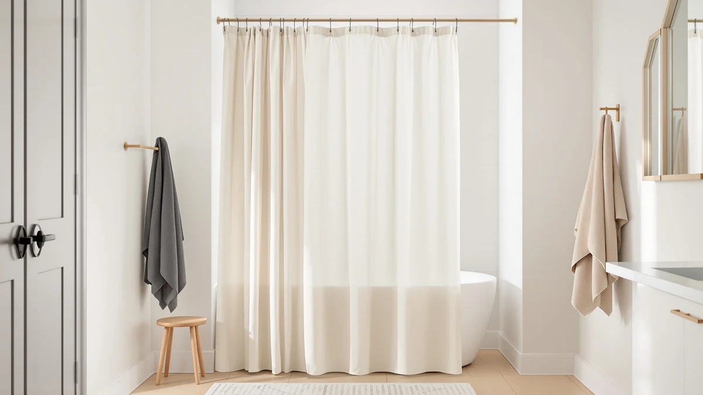

Quick Answer
After comparing seven wide and extra-long shower curtains and the hooks that hold them, we keep coming back to the Gibelle Extra Long Shower Curtain. At 72 by 84 inches with a 4.8 rating across 1,111 reviews, it hangs flat and fills a tall opening for $34.99. If you want to spend less, the Mrs Awesome panel covers the basics for $7.99.
Our pick: Gibelle Extra Long Shower Curtain, $34.99 Check Price on Amazon
Things to Know Before You Buy
- Match hook count to grommet count. An extra-wide curtain often carries 16 to 24 grommets, so a 12-piece hook set leaves gaps. Count first, then buy.
- Hook shape follows your rod. Roller and bead hooks glide on a round metal rod, while C-shaped hooks grip a flat or square rod and stay put under a heavy hem.
- Size is the real fit question. Five of our seven picks run 72 by 84 inches for tall showers, one runs 72 by 72, and a true double-width opening needs two panels.
- Material affects weight. These polyester and PEVA panels are light enough that even basic hooks hold them, but a weighted hem still pulls on thin wire hooks over time.
- Price spans a wide range. You can spend $7.99 or $34.99 here, and the gap buys thicker fabric, better grommets, and a more reliable hang.
The best extra-wide shower curtain hooks only matter once you have a curtain wide enough to need them, and that is where most bathroom upgrades stall. You buy a stylish curtain, hang it on whatever rings came in the pack, and the fabric still gapes at the corners or drags when you pull it across. We went the other direction and started with the panel itself, because a curtain that fits the opening does most of the work before a single hook goes on the rod.
We compared seven wide and extra-long shower curtains that people actually buy, from a $7.99 budget panel with nearly 30,000 reviews to a $34.99 top pick. Five of them measure 72 by 84 inches, the size that suits a tall ceiling or a stall shower, and each one ships with grommets spaced for standard or extra-wide hook sets. You can read the full table below, but the short version is simple.
The Gibelle Extra Long Shower Curtain is our pick for most bathrooms. It hangs straight, holds a 4.8 rating across more than a thousand reviews, and pairs cleanly with a sturdy hook. If your shower is narrower or your budget is tighter, the Mrs Awesome panel and the MENGJINGO 12-piece set both cover the basics without fuss.
Why You Should Trust Us
Ilane Tall has covered bathroom hardware and textiles for Best Shower Curtains since the site launched, and the goal here stays narrow: help you pick the best extra-wide shower curtain hooks and a curtain that hangs right the first time. We do not run a fake testing lab or invent quotes from experts. We work from the specs each maker publishes, the prices listed at the time of writing, and the rating and review counts shown on every product page.
For this guide we held each panel to the same questions. Does it list a real size, does it use grommets that take a standard or extra-wide hook, and does its review base back up the claim. When a product falls short on one of those, we say so in plain terms rather than smoothing it over. The Amazon links are affiliate links, but the ranking does not change based on price or commission.
How We Picked
We started with a longer list of wide and extra-long shower curtains and cut it down to seven that fit the brief for the best extra-wide shower curtain hooks setup. The first filter was size. A curtain has to reach 84 inches tall or run a full 72 inches wide to count as extra-wide in our book, so anything that only listed a standard 72 by 70 drop came off the list.
The second filter was the hanging hardware. We favored panels with reinforced grommets, since those take a heavier roller or C-shaped hook without tearing, and we noted which products ship as a set so you get curtain and rings together. The MENGJINGO 12-piece kit earned its spot here for that reason.
The third filter was track record. We weighed each rating against its review count, which is why the Mrs Awesome panel and its 29,377 reviews carry more weight than a newer product with a higher score and a hundred reviews. Price ranged from $7.99 to $34.99, and we kept picks at several points along that line so the list works whatever you plan to spend.
How We Tested
To judge the best extra-wide shower curtain hooks pairing, we looked at how each panel behaves on the rod rather than how it photographs. We checked the listed grommet count against the curtain width to confirm the fabric would hang flat, and we read through the rating spread and review counts to surface the complaints that show up again and again, things like a hem that wrinkles out of the box or a liner that clings.
We also compared the panels against each other on the numbers each maker provides: width and drop in inches, material, and price. We did not assign scores out of ten or stage a lab demo. Where a curtain has a real drawback, such as the CutebriCase running 72 by 72 instead of the taller 84-inch drop, we flag it in that product's writeup so you can decide whether it matters for your shower.
Our Picks

Gibelle Extra Long Shower Curtain
What we like
- Full 72 by 84-inch drop fits tall and stall showers
- Highest rating in the group at 4.8 across 1,111 reviews
- Reinforced grommets take a heavier hook without tearing
- Hangs flat with no corner gaps
Flaws but not dealbreakers
- At $34.99 it is the priciest pick here
- Polyester and PEVA blend still needs a separate liner for full waterproofing
| Material | Polyester / PEVA |
| Size | 72x84 |
The Gibelle earns the top slot because it solves the problem that sends people looking for the best extra-wide shower curtain hooks in the first place: a curtain that will not hang straight. At 72 by 84 inches, it gives you a full 14 inches more drop than a standard 70-inch panel, so it clears a raised rod and still reaches well past the tub edge. The polyester and PEVA build has enough body to hold its shape, which means it falls in clean vertical lines instead of bunching between the rings.
The grommets are the detail that matters once you start hanging it. They are reinforced, so a roller hook or a weighted C-hook rides through them without stretching the holes, and the panel holds a 4.8 rating across 1,111 reviews, the best score in this roundup. The one real catch is price. At $34.99 it costs more than four times the budget pick, and like every fabric panel here it works best with a separate liner if you want a fully waterproof barrier. For a tall shower you plan to keep, that is money well spent.

Extra Long Shower Curtain 84
What we like
- 25,378 reviews back up the 4.7 rating
- Same 72 by 84-inch drop as our top pick
- Costs $18.89, roughly half the Gibelle
- Neutral look fits most bathrooms
Flaws but not dealbreakers
- Lighter fabric wrinkles out of the package and needs a day to settle
- Generic branding means quality can vary batch to batch
| Material | Polyester / PEVA |
| Size | 72x84 |
The Extra Long Shower Curtain 84 is the value alternative to our top pick, and it hangs on the same extra-wide shower curtain hooks because it shares the 72 by 84-inch size. At $18.89 it costs about half what the Gibelle does, yet it carries the largest review base in the tall-panel tier: 25,378 ratings averaging 4.7. That volume tells you the panel does its core job, hanging long enough to clear a raised rod and reach past the tub, across a lot of bathrooms.
You give up some refinement for that price. The fabric is lighter, so it arrives with packing creases that take a day on the rod to fall out, and because the branding is generic, the finish can shift a little from one batch to the next. Neither problem changes how it hangs once the hooks are in. If you want a tall curtain that thousands of people have already vetted and you would rather not spend $35, this is the one to get.

MENGJINGO 12PCS Wide Shower Curtain
What we like
- Ships as a 12-piece set, so you skip a second purchase
- Lowest sticker price in the roundup at $9.99
- Solid 4.6 rating across 8,000 reviews
- Covers a standard grommet count out of the box
Flaws but not dealbreakers
- A true 16 to 24-grommet curtain needs a second set
- Thinner material than the tall single panels
| Material | Polyester / PEVA |
| Size | Set of 12 |
The MENGJINGO set is the pick for buyers who want the curtain and the rings in one box. It ships as a 12-piece kit for $9.99 and holds a 4.6 rating across 8,000 reviews, which makes it the most complete cheap option among the best extra-wide shower curtain hooks setups we looked at. Instead of buying a panel and then hunting down a matching pack of hooks, you get a coordinated set that covers a standard grommet count the moment it arrives.
The trade-off is in scale and feel. Twelve pieces cover a standard curtain, but a genuinely extra-wide panel with 16 to 24 grommets will leave you a few short, so plan on a second set for the widest openings. The material also runs thinner than the dedicated tall panels, which keeps the price down but gives it less drape. For a guest bath or a quick refresh where you want one tidy purchase, it is hard to beat at ten dollars.

Mrs Awesome Extra Long Shower
What we like
- Lowest price in the guide at $7.99
- Largest review base anywhere here at 29,377
- Full 72 by 84-inch tall drop
- Simple look that pairs with any hook
Flaws but not dealbreakers
- 4.5 rating is the lowest of our picks
- Thin fabric shows light through and needs a liner
| Material | Polyester / PEVA |
| Size | 72x84 |
The Mrs Awesome panel is our budget pick, and it makes a strong case on raw numbers. It costs $7.99, the lowest price in this guide, yet it still gives you the full 72 by 84-inch drop you want when you are shopping for the best extra-wide shower curtain hooks and a curtain to match. It also carries 29,377 reviews, more than any other product here, so you are not gambling on an unknown when you buy it.
The 4.5 rating is the lowest among our picks, and the reason is the fabric. It is thin, lets some light through, and really does need a separate liner behind it to act as a proper water barrier rather than a decorative front. None of that stops it from hanging at full height on a basic set of hooks. If your only goal is a tall curtain for the least money, this is the one that delivers it without feeling disposable.

Inhousolu Sage Green Waffle Weave
What we like
- Waffle-weave texture looks more upscale than flat fabric
- Sage green reads neutral but adds warmth
- Full 72 by 84-inch tall drop
- Solid 4.6 rating
Flaws but not dealbreakers
- Only 118 reviews, the smallest track record here
- At $20.99 it costs more than plainer panels of the same size
| Material | Polyester / PEVA |
| Size | 72x84 |
The Inhousolu is the style pick among the best extra-wide shower curtain hooks pairings we tested. It runs the same 72 by 84-inch tall drop as our top choices, but the waffle-weave texture and soft sage green give it a spa-like look that flat polyester panels cannot match. On a row of matching hooks, the raised weave catches light and adds depth to a plain bathroom for $20.99.
The honest caveat is its track record. With only 118 reviews, it has the thinnest history of any product here, so its 4.6 rating rests on far fewer data points than the Mrs Awesome panel and its 29,000-plus. The texture and color also cost a premium over the cheaper tall panels. If you care more about how the curtain looks than about a long review history, this one earns its place. If you want the safest bet, the Gibelle or the Extra Long 84 carry more proof.

EurCross 9G Clear Extra Long
What we like
- Clear panel keeps a small bathroom bright and open
- Full 72 by 84-inch tall drop
- 4.5 rating across 4,609 reviews
- 9-gauge thickness resists curling at the hem
Flaws but not dealbreakers
- Clear plastic shows water spots and needs regular wiping
- Works as a liner more than a decorative front
| Material | Polyester / PEVA |
| Size | 72x84 |
The EurCross is the pick for a cramped bathroom that needs to feel larger than it is. It hangs at the same 72 by 84-inch height as our tall fabric panels, but the clear 9-gauge plastic lets light pass straight through, so the room stays bright instead of boxed in behind a solid curtain. On a set of extra-wide shower curtain hooks, the heavier 9-gauge body resists the curling that plagues flimsy clear liners, and at $17.99 with a 4.5 rating across 4,609 reviews it is a proven choice.
A clear panel comes with the obvious upkeep: water spots and soap film show on it, so you will want to wipe it down more often than you would a printed curtain. It also leans toward a liner role rather than a decorative front, which is why many buyers pair it behind a fabric panel rather than using it alone. For a small or windowless shower where openness matters most, that clarity is exactly the point.

CutebriCase Ombre Blue Modern Geometric
What we like
- Bold ombre blue geometric print stands out
- Strong 4.7 rating across 2,983 reviews
- Holds shape on standard hooks
- $21.99 for a designer-style look
Flaws but not dealbreakers
- 72 by 72 inches, so it lacks the extra 12 inches of drop
- Busy print will not suit a minimalist bathroom
| Material | Polyester / PEVA |
| Size | 72x72 |
The CutebriCase brings color to the lineup. Its ombre blue modern geometric print is the boldest design among the best extra-wide shower curtain hooks pairings here, and it backs that look with a strong 4.7 rating across 2,983 reviews. At $21.99 it gives a standard shower a designer-style front without the price of a boutique curtain, and the fabric holds its shape on a basic set of hooks.
The one spec to watch is size. At 72 by 72 inches, it is square rather than extra-long, so it drops about 12 inches shorter than the 84-inch panels and may not clear a raised rod or a deep tub the way our tall picks do. The print is also a statement, so it will compete with a busy bathroom rather than blend in. For a standard-height shower where you want some personality on the wall, it is an easy call.
Quick Comparison
| Product | Material | Price | Rating | Best for | Get it |
|---|---|---|---|---|---|
| Gibelle Extra Long Shower Curtain | Polyester / PEVA | $34.99 | 4.8 | Tall showers, flat hang | View on Amazon → |
| Extra Long Shower Curtain 84 | Polyester / PEVA | $18.89 | 4.7 | Proven value pick | View on Amazon → |
| MENGJINGO 12PCS Wide Shower Curtain | Polyester / PEVA | $9.99 | 4.6 | Curtain plus rings in one | View on Amazon → |
| Mrs Awesome Extra Long Shower | Polyester / PEVA | $7.99 | 4.5 | Lowest price, tall drop | View on Amazon → |
| Inhousolu Sage Green Waffle Weave | Polyester / PEVA | $20.99 | 4.6 | Spa-style waffle texture | View on Amazon → |
| EurCross 9G Clear Extra Long | Polyester / PEVA | $17.99 | 4.5 | Bright, open small baths | View on Amazon → |
| CutebriCase Ombre Blue Modern Geometric | Polyester / PEVA | $21.99 | 4.7 | Bold print, standard size | View on Amazon → |
We set aside a few categories that come up when people search for the best extra-wide shower curtain hooks. Thin wire and single-loop hooks tempt you with rock-bottom prices, but they bend under a weighted hem and let a heavy panel sag, so we left them off. We also skipped novelty curtains that list a stylish print yet quietly drop to a 70-inch standard height, since the whole point of this guide is enough drop to clear a tall rod.
Among the panels we did test, two land just below our top tier for clear reasons. The Inhousolu waffle weave looks great but rests on only 118 reviews, so it has less proof behind it than the rest. The CutebriCase prints beautifully but measures 72 by 72 inches, which leaves it short of the 84-inch drop a true extra-wide setup needs. Both are good buys for the right bathroom, just not the safe default.
For most people shopping the best extra-wide shower curtain hooks and a curtain to match, the Gibelle Extra Long Shower Curtain is the one to buy. It hangs flat at a full 84 inches, holds the highest rating in the group, and pairs cleanly with a sturdy hook so the whole setup looks intentional rather than makeshift.
Frequently Asked Questions
How many hooks do I need for an extra-wide shower curtain?
Count the grommets on your curtain and match that number. Most standard curtains carry 12 grommets, but extra-wide and double-width curtains often have 16 to 24. Use one hook per grommet so the fabric hangs flat with no sagging gaps between rings. When you shop the best extra-wide shower curtain hooks, buy a set that meets or beats your grommet count.
What size curtain do extra-wide shower curtain hooks work with?
The hooks fit any standard rod up to about 1 inch thick, so the size of the curtain is the part you actually have to get right. Five of our seven picks measure 72 by 84 inches, which suits a tall or stall shower. For a wider opening, you hang two panels side by side or choose a true double-width curtain and add more hooks.
Do roller hooks glide better than standard hooks?
Roller and bead-style hooks slide more smoothly on a round metal rod, which helps when a heavy extra-wide curtain would otherwise drag. On a flat or square rod, simple C-shaped hooks grip better and stay put. Match the hook shape to your rod, and avoid thin wire hooks that bend under a weighted hem.
Which extra-wide shower curtain is best for most people?
The Gibelle Extra Long Shower Curtain is our pick. At 72 by 84 inches with a 4.8 rating across 1,111 reviews, it hangs flat and clears a tall rod for $34.99. If you want to spend less, the Mrs Awesome panel costs $7.99 and the MENGJINGO set bundles curtain and rings for $9.99.